Zuerst die Abgrenzung. Wenn die Prüfung „Scheibe“ schreibt, meint sie fast immer den wandartigen Träger: eine Wand, die auf zwei Punkten liegt und Lasten überbrückt. Den rechnest du mit einem Fachwerk. Die Übung 07 behandelt zusätzlich die Wandscheibe, die durchgehend aufliegt und auf Druck beansprucht wird. Die rechnest du wie eine Stütze mit Knicknachweis.
Abgrenzung: welches Bauteil habe ich?
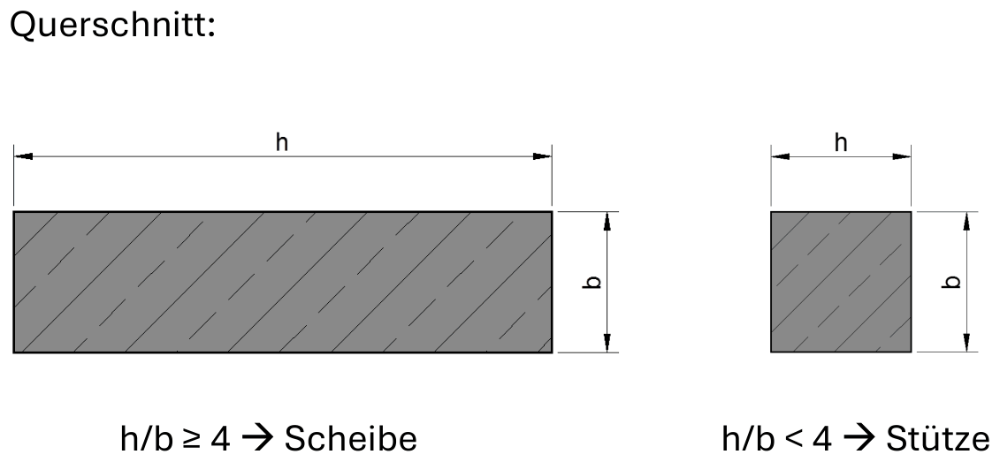
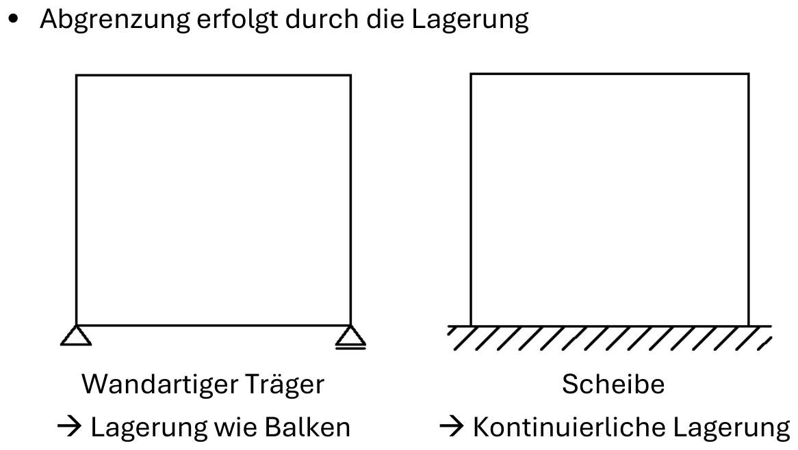
| Kriterium | Folge | |
|---|---|---|
| Scheibe vs. Stütze | h/b ≥ 4 → Scheibe, sonst Stütze | entscheidet der Querschnitt, nicht die Wandhöhe |
| Scheibe vs. wandartiger Träger | Lagerung | durchgehend → Scheibe, punktuell wie ein Balken → WT |
| Scheibe vs. Platte | Beanspruchung | überwiegend Biegung aus der Ebene → Platte |
| WT vs. Balken | l/h: Einfeld < 2,0, Zweifeld < 2,5, viele Felder < 3,0 | darüber ist es ein normaler Balken mit Biegebemessung |
Weg A: wandartiger Träger (Fachwerk)
Warum nicht einfach Balkenbiegung?
Beim schlanken Balken ist die Spannung über die Höhe linear verteilt (Navier), der Hebelarm ist z ≈ 0,8 h. Beim gedrungenen Träger stimmt das nicht mehr. Die Zugzone rutscht ganz nach unten und wird dünn, die Druckzone ist breit und sitzt tief. Der Hebelarm wächst deshalb nicht mehr mit der Höhe mit.
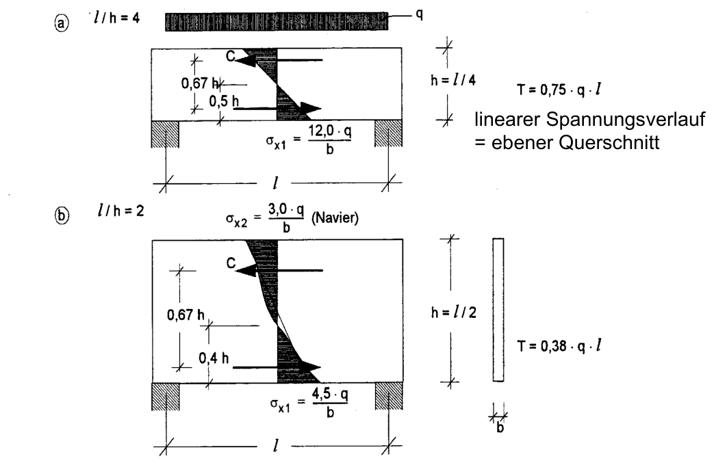
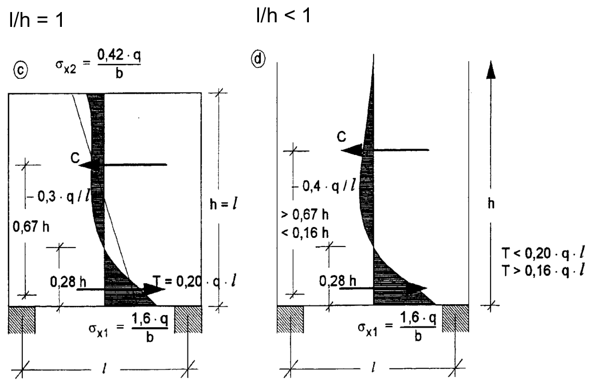
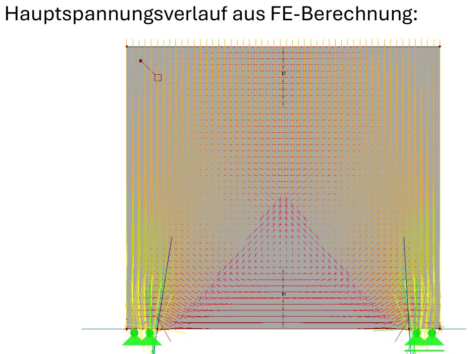
Das Fachwerkmodell: Bogen plus Zugband
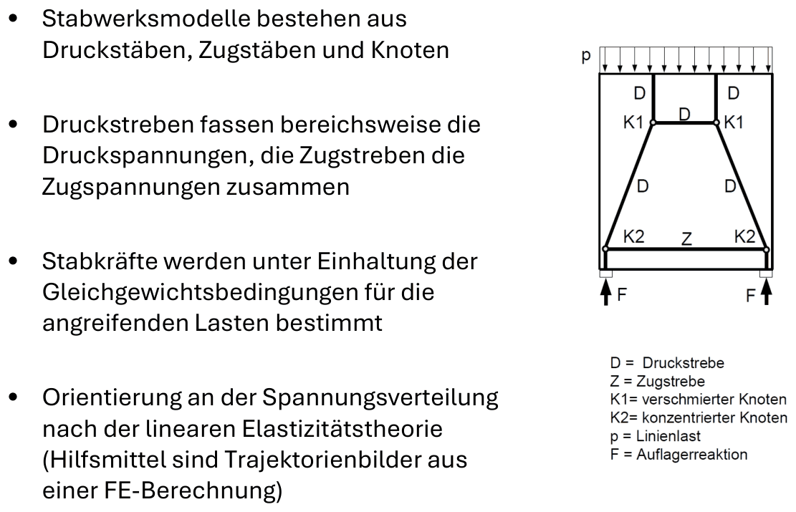
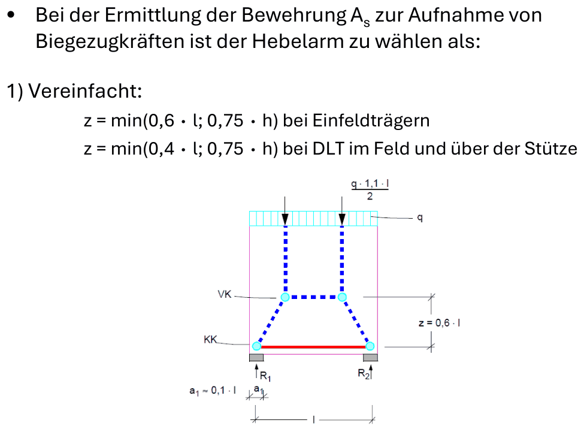
Diese Farben verwenden auch die FE-Bilder der Übung (grün Druck, rot Zug). In der Prüfung verlangt die Angabe ausdrücklich: Druck und Zug unterschiedlich kennzeichnen.
Die drei Laststellungen aus der Prüfung
Kindergarten 2015 und Schulgebäude 2014 verlangen drei getrennte Fachwerkmodelle, deren Zugkräfte du am Ende addierst. Lagerhalle 2013 verschmiert alles zu einer Gleichlast und braucht nur Modell ②. Der Rechner ist mit den Werten der Kindergarten-Lösung vorbelegt. Stell deine eigenen Zahlen ein, die Skizzen passen sich an.
Auflager: Druckspannung im Knoten
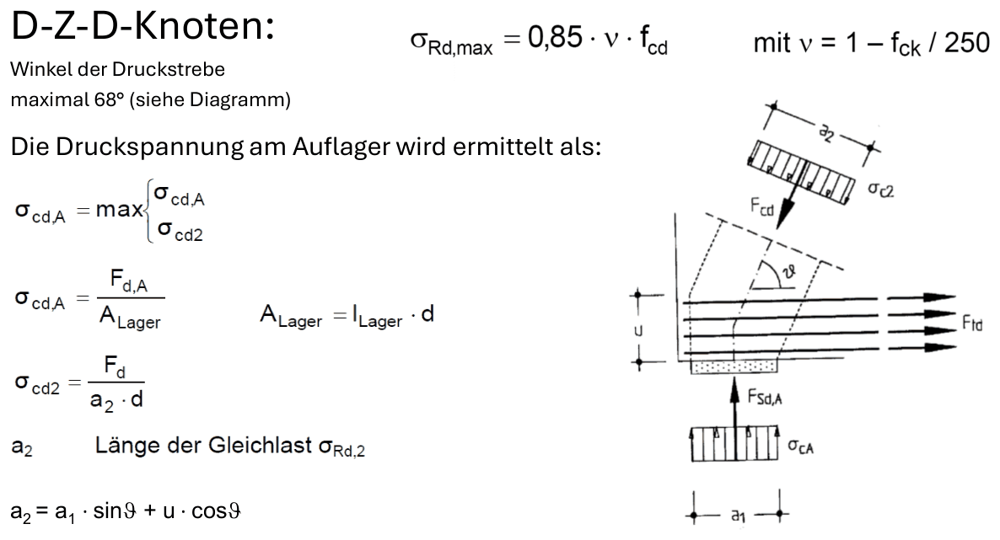
σcd,A = Fd,A / (lLager · dS) ≤ σRd,max = 0,85 · ν · fcd ν = 1 − fck/250
Die Zugbewehrung muss ab der Vorderkante des Auflagers voll verankert sein, am besten mit Schlaufen oder Winkelhaken.
Bewehrung verteilen und zeichnen
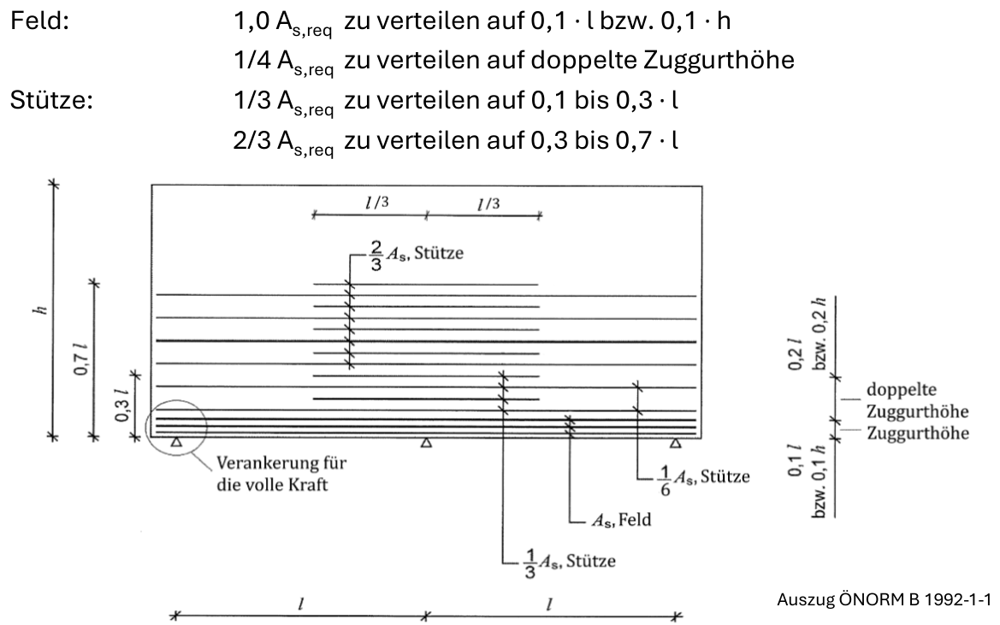
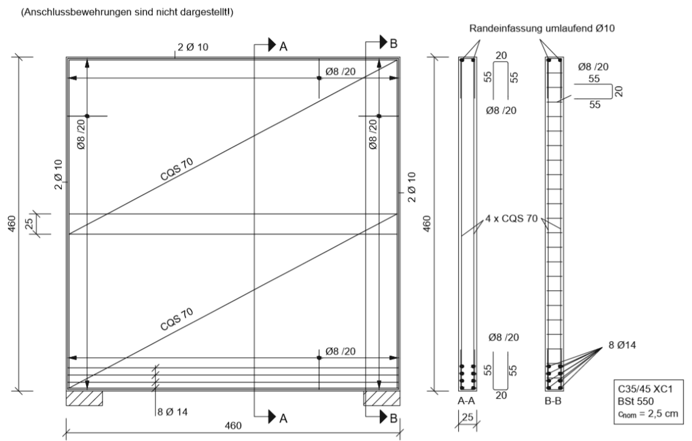
- Zugband ungeschwächt bis über die Auflager führen und dort voll verankern. Nicht abstufen.
- Zugband auf die Höhe u = min(0,1·h; 0,1·l) verteilen, nicht als einen Stab ganz unten.
- Zusätzlich 25 % der Zugbewehrung horizontal zwischen 0,1 h und 0,3 h (Umlenkkräfte der Druckstreben).
- Netz auf beiden Seiten: as,min = 0,001·ac, mindestens 1,5 cm²/m je Seite. Stababstand höchstens 2·d bzw. 30 cm.
- Mindestdicke 15 cm (Ortbeton).
- Mehrfeldträger, Stützbewehrung: 1/3 auf 0,1 l bis 0,3 l, 2/3 auf 0,3 l bis 0,7 l von unten verteilen.
Öffnungen und andere Laststellungen
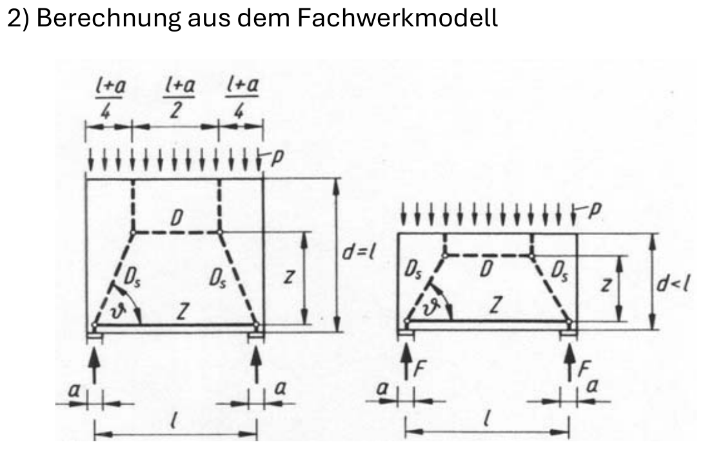
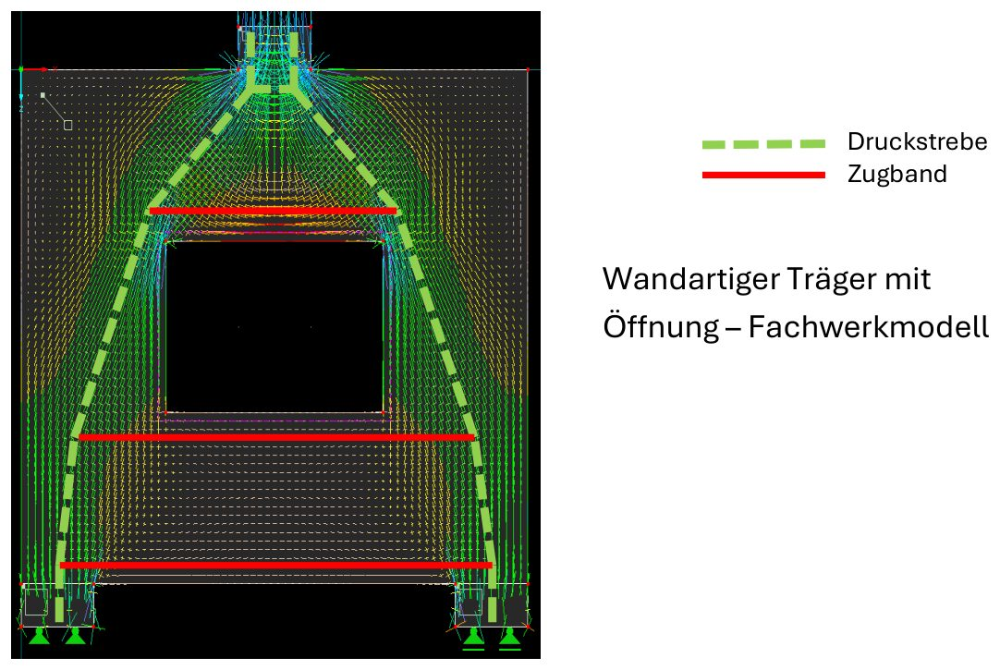
Faustregel für jedes Modell: Druckstreben folgen den Druckspannungen (von der Last schräg zum Lager), Zugstreben gehören dorthin, wo du auch Bewehrung einlegen kannst (waagrecht oder lotrecht). Winkel der Druckstrebe höchstens etwa 68°, sonst ist das Modell zu steil.
Rechenweg in der Prüfung
Geometrie und Einordnung
leff = lges − lLager, leff/h < 2 → wandartiger Träger. u = min(0,1·h; 0,1·leff).
Lastfälle getrennt skizzieren
Einzellasten der Stützen (nicht verschmieren), Deckenlast als Strecke oder Resultierende im Viertelspunkt, Eigengewicht 1,35·25·d·h als Strecke oben. Je ein Fachwerk, Druck und Zug unterscheiden.
Zugkräfte addieren, bemessen
Z = ΣZi, As = Z / fyd, auf u verteilen, plus konstruktive Bewehrung.
Druck am Auflager
ΣFA am stärker belasteten Lager, σ = FA/(lLager·d) ≤ 0,85·ν·fcd.
Weg B: Wandscheibe (Modellstütze)
Die Wand liegt durchgehend auf und bekommt vorwiegend Druck in ihrer Ebene. Gerechnet wird ein 1 m breiter Wandstreifen wie eine Stütze (Ü-Skript ab S. 352). Die Frage ist nur: Wie lang ist die Knicklänge? Das hängt davon ab, an wie vielen Seiten die Wand gehalten ist.
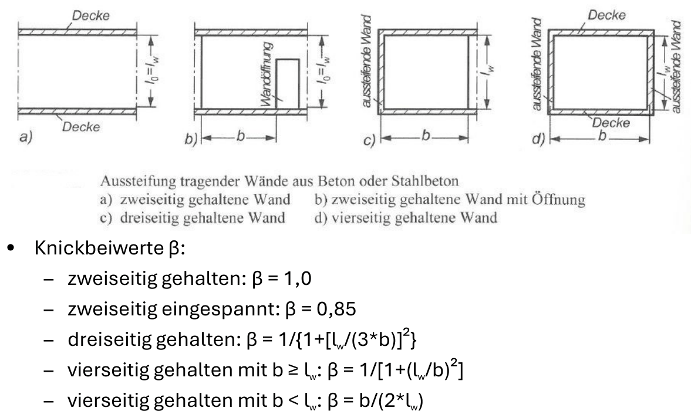
Der Rechner ist mit dem Übungsbeispiel vorbelegt (20 cm Innenwand, vierseitig gehalten, Lösung: λ = 40,28 > 25). Stell die Haltung um und schau, wie sich β und λ ändern.
n = nEd / (hw · fcd)
n ≥ 0,41 → λlim = 25
n < 0,41 → λlim = 16 / √n
λ = l0 / i, i = hw / √12
λ > λlim → Theorie II. Ordnung (Modellstütze, Ausmitten e0 + ei + e2), dann Interaktionsdiagramm. Weiter wie eine Stahlbetonstütze, bezogen auf 1 m.
Öffnungen nehmen Haltungen weg
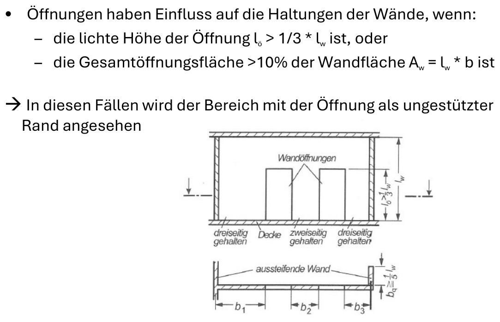
Konstruktion der Wandscheibe
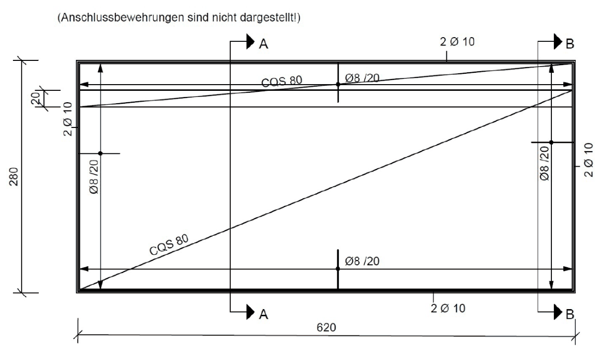
- Mindestdicke 12 cm Ortbeton, 10 cm Fertigteil, 8 cm bei Aussteifungswänden.
- Netz auf beiden Seiten: lotrecht innen, horizontal außen.
- Stababstand: lotrecht max. 30 cm bzw. 2·hw, horizontal max. 35 cm.
- Lotrecht min: as,v ≥ 0,15·|nEd|/fyd und ≥ 0,0015·ac, bei hohem Druck (|nEd|/ac ≥ 0,3·fcd) ≥ 0,003·ac. Je zur Hälfte pro Seite, mindestens 1,5 cm²/m je Seite.
- Horizontal min: ≥ 0,2·as,v, bei hohem Druck ≥ 0,5·as,v.
- Maximal: 0,02·ac ohne Verbügelung, 0,04·ac mit Stützenbügeln.
- Stirnflächen wie freie Plattenränder einfassen. Keine S-Haken als Abstandhalter.